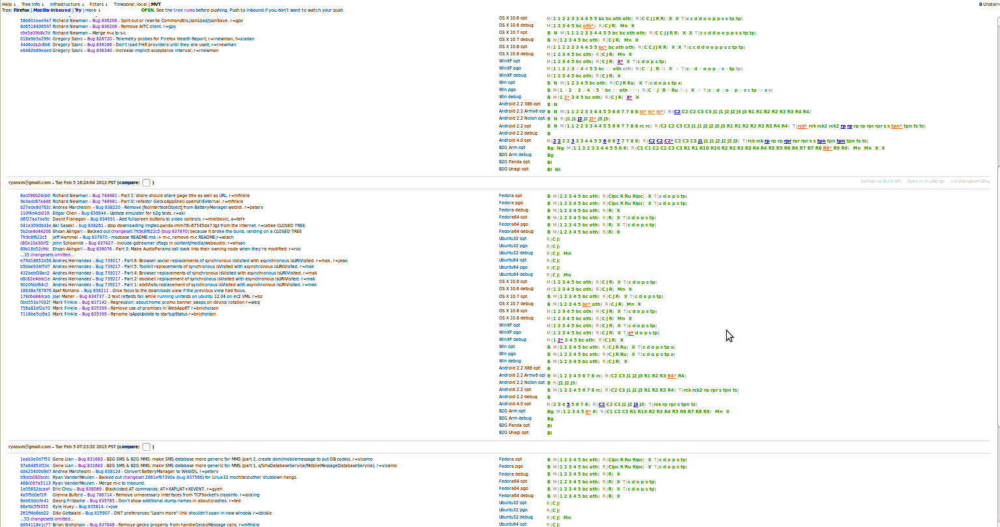
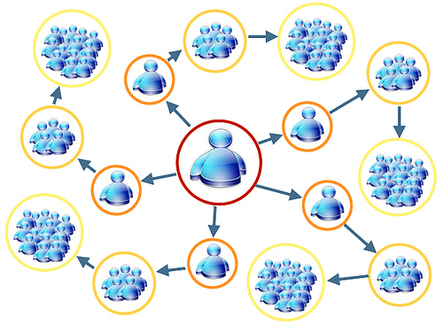
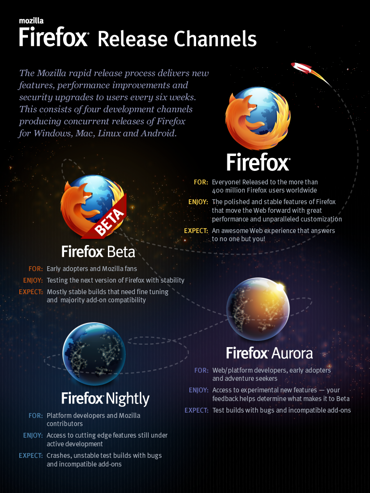
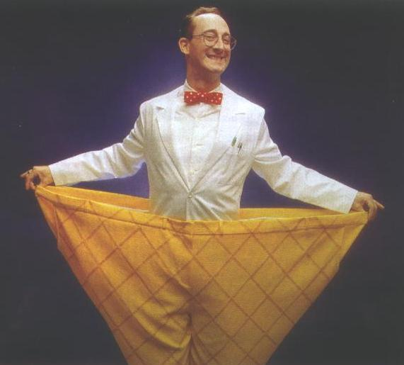

Alex Lakatos, Mozilla, Tabara de Testare #10, Cluj CoWork, 06/02/2012
What's Open Source Testing all about?
What types of testing happen at Mozilla?
- Grey-box is the only box
- Unit testing in Developer Land
- There is only Continous Integration
- Having multiple levels of System Testing
- When alpha and beta just aren't enough
Unit testing in Developer Land
- buildbot
- xpcshell
- JS shell tests
- crashtest
- reftest
- Mochitest
- Mochitest-other
- Mochitest-Robocop
- Talos
- Mozmill
- Speedtests
- Peptest
- Marionette harness
There is only Continous Integration

Having multiple levels of System Testing

When alpha and beta just aren't enough

- Smoke tests
- Regressions
- Performance
- Internationalization
- There is only Bugzilla!
- Open access to info
- How to loose 8 hours in calls
- Tools have to improve productivity
- There is no "one size fits all"
- https://bugzilla.mozilla.org/
- 838000+ bugs loged up until today
- used for everything, not just development
- https://bugzilla.mozilla.org/
- http://wiki.mozilla.org/
- Public calls
How to loose 8 hours in calls
- Do you really need to call?
- Do you have anything to say?
- Are you getting anything out of the meeting?
There is no "one size fits all"

Using lessons from fairy tales into the real world